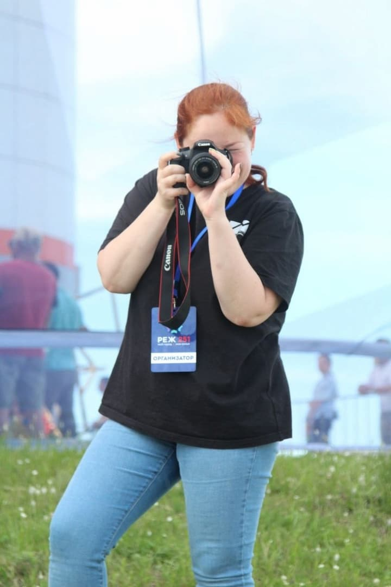

Если ты молод, активен и у тебя есть что сказать, добро пожаловать в наши ряды на страницы "Планеты".
Редакция газеты нацелена на формирование активной жизненной позиции у молодёжи. Мы стремимся поддерживать постоянный контакт с нашей аудиторией, помогая молодым людям решать их проблемы, расширять кругозор и раскрывать внутренний потенциал. Главный принцип нашего издания - свободное общение.
"Планета" старается держаться в стороне от политики и религии, сосредотачиваясь на более интересных и актуальных темах. Мы поднимаем важные вопросы для подростков старшего школьного возраста, такие как подготовка к экзаменам, выбор жизненного пути, профессии и вуза, отношения с учителями, родителями и сверстниками, а также увлечения и хобби. Наша миссия - стать другом-путеводителем для молодого поколения и помочь найти ответы на интересующие их вопросы о мире. Мы выполняем социализирующую и ценностноформирующую функции.
Мы рассказываем обо всём, что волнует и интересно молодёжи: об активности, гражданской позиции и вариантах приложения своих сил и способностей на благо общества. Также мы предоставляем возможность молодому поколению попробовать себя в роли журналиста, репортёра, фотографа или автора. Мы с удовольствием размещаем статьи юных режевлян на страницах газеты и публикуем фото и видео контент на нашей странице в соцсетях.
С момента основания журнала в сентябре 2006 года, мы в типографии ИПК Лазурь поддерживаем "Планету Молодых" и обеспечиваем печать с целью развития молодёжной журналистики и поддержки активной позиции молодёжи в нашем округе.